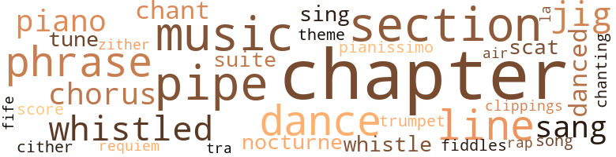
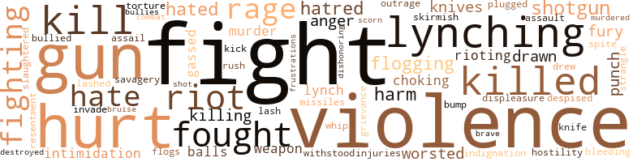

Music terms in the text
114 music-related terms matched in this text.
Most frequent terms in this topic: chapter (12); chapters (10); music (8); section (8); pipe (8)

chant.n.01
Definition: a repetitive song in which as many syllables as necessary are assigned to a single tone
| word |
sentence |
| chant |
The chant went on , like some of the chants which students repeat over and over at football games . |
| chants |
The chant went on , like some of the chants which students repeat over and over at football games . |
| chant |
The chant was altered . |
chapter.n.01
Definition: a subdivision of a written work; usually numbered and titled
| word |
sentence |
| chapter |
Says he 's head of the chapter in Baynesville . " |
| chapters |
By the way , one of our largest chapters is at Baynesville . |
| chapters |
" We 've got chapters in five states already . |
| chapter |
Senator Duffield was guest at a dinner which leaders of the Baynesville chapter of the White Band had proffered at the resplendent new ten-story Baynesville Hotel . |
| chapter |
This was an informal get-together , as Jay Blanship , Protector of the chapter , pointed out . |
| chapter |
The White Band would be blamed not only for the excesses of its individual members , but for any other rough stuff in a town where it had a chapter . |
| chapters |
The local chapters decide . " |
| chapters |
Hank recalled , " As Grand Recorder , I have to write most of the policy letters , and Joe 's made me write several calling down some chapters pretty sharply , telling Protectors they had better watch their step and try to keep order in their towns , even if they are not directly responsible for recent trouble . |
| chapters |
Hell , we would n't want to lose any chapters . " |
| chapter |
He was the chapter 's intellectual . |
| chapter |
It looked well for the chapter to have at least one highbrow . |
| chapters |
Jake Gilliam was Grand Instructor of the order , and his duties were rather vague , but he put out propaganda for the chapters and prepared material for the publicity man they had recently hired . |
| chapter |
Jay had assured him the chapter , as such , would do nothing violent or unlawful . |
| chapter |
He entered the Phi-O house , staved off the half-serious kidding about the game Saturday and the honor of the chapter . |
| chapters |
It was a meeting of three chapters in the metropolitan area . |
| chapters |
These chapters were being formed loosely into the Greater Riverport Council , which would meet occasionally . |
| chapter |
At the order of the Riverport chapter 's Instructor , they raised their right arms and repeated after him , " I pledge myself solemnly to rededicate myself to God and country and the white race . |
| chapter |
Another officer of the chapter came around with a tray of the beautifully wrought masks . |
| chapters |
There were several speeches by officers of the two chapters in the suburban areas . |
| chapter |
Do you think the papers in the North 'll discriminate , pause over such niceties as whether some Bandsmen did it on their own or some chapter authorized it by resolution ? |
| chapters |
" It might help us actually to tighten up on the chapters , " Dave argued . |
| chapter |
Ned had been merely a symbol of one chapter in his life . |
chorus.n.01
Definition: any utterance produced simultaneously by a group
| word |
sentence |
| chorus |
It was a mild evening , half summer , half autumn , and through the screen door a faint background chorus of crickets drifted in . |
| chorus |
A lot of the others kept up their monotone chorus , " nigger , nigger , nigger nigger . |
| chorus |
The fat man joined the chorus , " Hey , there , Bearcat . |
clipping.n.01
Definition: an excerpt cut from a newspaper or magazine
| word |
sentence |
| clippings |
A flash of mundane indignation touched him as he thought of some clippings he went over just before he left his office . |
cornet.n.01
Definition: a brass musical instrument with a brilliant tone; has a narrow tube and a flared bell and is played by means of valves
| word |
sentence |
| trumpet |
" Did you hear that trumpet ? |
dance.n.01
Definition: an artistic form of nonverbal communication
| word |
sentence |
| dance |
He brought his right palm down hard on the table , then , realizing he had made the plates dance , he apologized . |
| dance |
The number ended , there was perfunctory applause , and some of the dancers drifted to the punch bowl ; others stood about chatting till the next dance . |
| dance |
" May I have this dance ? " |
| dance |
" Am I in time to ask you for this dance ? " |
| dance |
He heard but did n't listen to the other speakers , because what they had to say little concerned him : announcements about the Toussaint Elks , committee reports , plans for a barbecue and dance in the hall next month for the benefit of old or disabled Elks . |
dance.v.03
Definition: skip, leap, or move up and down or sideways
| word |
sentence |
| danced |
Suddenly he danced into a fighting stance , his left fist out , his feet moving with pitiful sluggishness . |
| danced |
The Davisons had danced three times . |
| dance |
There were always men eager to dance with Eva , and her husband usually danced with the wives of their closest friends . |
| danced |
There were always men eager to dance with Eva , and her husband usually danced with the wives of their closest friends . |
fife.n.01
Definition: a small high-pitched flute similar to a piccolo; has a shrill tone and is used chiefly to accompany drums in a marching band
| word |
sentence |
| fife |
To help preserve our way of fife in the South , the way we 've been living for generations . " |
jig.n.01
Definition: music in three-four time for dancing a jig
| word |
sentence |
| jigs |
I heard things were boiling in Niggertown , jigs going around armed . " |
| jig |
" Where 'll we find this other jig ? " |
| jigs |
If it was n't for them , most of our jigs would forget there was ever any Supreme Court ruling , and some of them never knew about it until they were told . " |
| jig |
Goddam , that jig 's got a kick like a mule . " |
music.n.01
Definition: an artistic form of auditory communication incorporating instrumental or vocal tones in a structured and continuous manner
| word |
sentence |
| music |
Suddenly there was another sound , vague at first , then definite ... the music of a band . |
| music |
The last marchers passed , and the music faded into the distance . |
| music |
He remembered Mencken 's saying , " The music will be bad , but the food will be good . " |
| music |
John Duffield liked nothing better than a philosophical or a literary or even a musical ( he knew music ) parley . |
| music |
Now Tom and Ella Goodwin were having him back at their home for a much better dinner and an evening of music . |
| music |
He knew what music the three Strausses had written , and Bach was more than a name to him . |
| music |
He played the piano quite well , and planned to teach music and compose . |
| music |
She 'd be laughing over some angle of something they 'd thought of - they found the same things funny , liked the same music , the same sort of paintings . |
nocturne.n.01
Definition: a pensive lyrical piece of music (especially for the piano)
| word |
sentence |
| nocturne |
Ella Goodwin sat at the small piano playing a Chopin nocturne in a pianissimo that was a mere breath of sound . |
| nocturne |
The gathering night quieted again , and the small , strident nocturne of insects floated back on the mild air . |
phrase.n.02
Definition: a short musical passage
| word |
sentence |
| phrase |
The phrase is not one that may be weighed on scales or measured according to some formula . |
| phrases |
As the speaker of the evening , who had been briefer than the rest , but more pungent , more to the point , made his way slowly down the center aisle , his progress was interrupted constantly by reaching hands , by phrases like " Thanks , Senator " or , more familiar , " You got 'em told , Joe . " |
| phrase |
A phrase from the announcement flashed back : " ... serving without salary . " |
| phrases |
Johnson read the typewritten letter , with its careful , noncommittal phrases , its guarded praise . |
| phrases |
Sarah loved to use unusual adjectives , and phrases which might sound strained or inapplicable came to her readily . |
| phrases |
Ignoring his wife 's rather pathetic effort to turn and twist phrases , a practice at which she was more adept years ago , when she used to write some fairly creditable lyrics , Joe said , " Ted , you 'll be glad to get your holidays when you 're off at college . |
piano.n.01
Definition: a keyboard instrument that is played by depressing keys that cause hammers to strike tuned strings and produce sounds
| word |
sentence |
| piano |
Ella Goodwin sat at the small piano playing a Chopin nocturne in a pianissimo that was a mere breath of sound . |
| piano |
What a time he 'd had with Mencken and a few of his friends , getting pleasantly drunk , eating sauerbraten and apple strudel , listening to an ensemble including two fiddles and a flute , with Mencken at the piano . |
| piano |
He played the piano quite well , and planned to teach music and compose . |
piano.n.02
Definition: (music) low loudness
| word |
sentence |
| pianissimo |
Ella Goodwin sat at the small piano playing a Chopin nocturne in a pianissimo that was a mere breath of sound . |
pipe.n.04
Definition: a tubular wind instrument
| word |
sentence |
| pipe |
Harry Holmes paused and filled his caked old pipe , a straight briar . |
| pipe |
Roger Clay was a short , portly man , on the young side of middle age , who looked as if he should always have a pipe stuck in his teeth , and , in fact , he often had . |
| pipe |
At his shabby office he filled and lighted his pipe and sat down to the galleys which had been laid there . |
| pipe |
Harry Holmes ' pipe had gone out . |
| pipe |
His teeth were clenched on Ins pipe , but it had gone out , and he did not relight it . |
| pipe |
Warren Ashley pulled out a cigar case and proffered it , but the old man thanked him , pointing to his pipe which lay on its side like a discarded memento among the clutter of others on the desk . |
| pipe |
He was humming a gay tune off-key as he retrieved his pipe , which he 'd been about to sweep into the wastebasket with a hillock of papers . |
| pipe |
He sang on as he filled the pipe and lit it . |
rap.n.05
Definition: genre of African-American music of the 1980s and 1990s in which rhyming lyrics are chanted to a musical accompaniment; several forms of rap have emerged
| word |
sentence |
| rap |
" But the Post says , " she quoted , snuggling beside him , " that the White Band probably is responsible , at least must take the rap for , outbreaks of violence , floggings , damage to houses , here and there . " |
requiem.n.02
Definition: a musical setting for a Mass celebrating the dead
| word |
sentence |
| requiem |
To thy high requiem become a sod . |
scat.n.01
Definition: singing jazz; the singer substitutes nonsense syllables for the words of the song and tries to sound like a musical instrument
| word |
sentence |
| scats |
And sometimes there would be a few Negroes worshiping with them , perhaps a few scats away . |
| scat |
A lot of men would consider a scat in the Senate the apex of their ambition . |
score.n.02
Definition: a written form of a musical composition; parts for different instruments appear on separate staves on large pages
| word |
sentence |
| score |
One was enough to make a test case , but he had wanted a score : a large number would make a more impressive petition . |
section.n.01
Definition: a self-contained part of a larger composition (written or musical)
| word |
sentence |
| section |
But there was one section of the fast-growing little city which had changed hardly at all - the area , roughly eight square blocks , known as Niggertown . |
| section |
Then a rock cracked against the window , splintering a section of it , sending a little shower of glass into the room . |
| section |
For instance , there was that fellow Pelletier , who lived in the Druid Grove section . |
| section |
I go on with the formal announcement : " ' Senator Duffield is serving without salary , in the hope that he can help his state and the whole South in meeting in a constitutional way a racial crisis which has not been of our choosing but which is the fruit of radical and left-wing liberal thinking in another section of the country . |
| section |
The South is a God-fearing , law-abiding section of the country . |
| section |
Oh , some of our more exuberant citizens may get a little out of hand now and then , perhaps rough up somebody , but in this we 're no different from any other section of the country . |
| section |
The other section - and I 'll ask you to join that - it 'll meet with the rest of us in Payne 's pool hall about eight o'clock . |
| section |
Bill Dade 'll be in charge of your section , and he has the address . |
sing.v.02
Definition: produce tones with the voice
| word |
sentence |
| sing |
Another remembered an old song his mother used to sing : " Nigger child bowlegged ; he walk too soon . " |
| sing |
I would n't know - we 'll all sing the first verse of ' America . ' " |
| sang |
They sang the stanza lustily . |
| sang |
Finally , as the night wore on and the audience began to stir restlessly , the star local baritone , soloist at the First Baptist Church , sang " America the Beautiful , " and the speaker of the evening , Senator Joseph Duffield , who , as the chairman said , everyone within sound knew and loved , was duly presented , to a stormy ovation . |
| sang |
He sang on as he filled the pipe and lit it . |
song.n.01
Definition: a short musical composition with words
| word |
sentence |
| song |
Another remembered an old song his mother used to sing : " Nigger child bowlegged ; he walk too soon . " |
suite.n.01
Definition: a musical composition of several movements only loosely connected
| word |
sentence |
| suites |
The white men , an even dozen , sat around drinks in one of the few suites the Baynesville Motel boasted : bedroom , living-room , bath , small balcony . |
| suite |
In the outer office of the president 's suite the secretary , a dark , pretty girl , recognized him . |
theme.n.03
Definition: (music) melodic subject of a musical composition
| word |
sentence |
| theme |
But nobody ever used the full name , given to it some time back in the eighteen-seventies when river traffic was as important as rail shipping and air travel was still a theme for science fiction . |
tone.v.01
Definition: utter monotonously and repetitively and rhythmically
| word |
sentence |
| chanting |
Slowly they hemmed him in , walked along with him , chanting something indistinguishable at first , then discernible , " nigger , nigger , nigger , nigger , nigger . |
tra-la.n.01
Definition: a set of nonsensical syllables used while humming a refrain
| word |
sentence |
| tra-la |
The flowers that fade in the fall , tra-la . " |
tune.n.01
Definition: a succession of notes forming a distinctive sequence
| word |
sentence |
| Line |
" Line up as usual . |
| line |
He passed by the waiting line as quickly as he could , and was pushed into the cool night , where knots of men still stood talking about the meeting . |
| tune |
Jack Taylor swung his strapped books and whistled a snatch of a popular tune as he started across the campus . |
| line |
- keeping them in line . " |
| line |
In an eddy of the surging crowd in the lobby a line of men waited to be signed up at the table where a thickset man presided . |
| tune |
He was humming a gay tune off-key as he retrieved his pipe , which he 'd been about to sweep into the wastebasket with a hillock of papers . |
| line |
Joe Duffield , standing below the platform with other officers in a sort of receiving line , shook hands with many . |
| lines |
The work of the brilliant cartoonist Hopper , who drew with bold economy of pen-and-ink lines , the scene purported to be a meeting of the board of directors of the White Band . |
| air |
Dave went to his hotel room with several New York and Chicago papers , which came by air mail and had the latest developments . |
violin.n.01
Definition: bowed stringed instrument that is the highest member of the violin family; this instrument has four strings and a hollow body and an unfretted fingerboard and is played with a bow
| word |
sentence |
| fiddles |
What a time he 'd had with Mencken and a few of his friends , getting pleasantly drunk , eating sauerbraten and apple strudel , listening to an ensemble including two fiddles and a flute , with Mencken at the piano . |
whistle.v.01
Definition: make whistling sounds
| word |
sentence |
| whistled |
White chillun ai n't studyin ' you . . . . " One of the older boys in the yard whistled shrilly through his teeth . |
| whistled |
Jack Taylor swung his strapped books and whistled a snatch of a popular tune as he started across the campus . |
| whistled |
The boys in the gallery , in their late teens or early twenties , whistled through their teeth or shouted . |
| whistle |
But he could maybe whistle for reinforcements and get them in trouble sure enough . |
| whistled |
Ned whistled . |
| whistle |
Sam Carruthers let out a low whistle . |
zither.n.01
Definition: a musical stringed instrument with strings stretched over a flat sounding board; it is laid flat and played with a plectrum and with fingers
| word |
sentence |
| cither |
From the campus came the heavy , throbbing sound that can be cither a turbulent stream or a throng of people in scattered talk . |
| zither |
" Tra-la-la , " said Sarah , " but why is the South worked up into such a zither ? " |
Violence terms in the text
277 violence-related terms matched in this text.
Most frequent terms in this topic: fight (39); violence (34); hurt (22); guns (14); gun (11)

anger.n.01
Definition: a strong emotion; a feeling that is oriented toward some real or supposed grievance
| word |
sentence |
| anger |
Ned 's face tensed , but he controlled an instinctive wave of anger . |
| anger |
He could n't have word go out over the wires , back to the political manipulators of his state , to the Rednecks who voted you in or out , that he was silent , perhaps afraid to take a position on something that stirred righteous anger all over the South . |
| Anger |
Anger flooded Joe 's thoughts . |
attack.v.01
Definition: launch an attack or assault on; begin hostilities or start warfare with
| word |
sentence |
| assail |
But I did n't mean to assail your revered coach . " |
bang.n.04
Definition: the swift release of a store of affective force
| word |
sentence |
| rush |
A few students of the summer school were passing , but the big rush would n't be on for three weeks , when the regular session started . |
battle.v.01
Definition: battle or contend against in or as if in a battle
| word |
sentence |
| combat |
Sarah , cool-looking in a thin , blue lounging robe , picked up the paper and read : Apparently the White Band , one of the better hate societies of the lamented ' 20 's , is being revived in a big way to combat this dreadful scourge of integration in the schools . |
bleeding.n.01
Definition: the flow of blood from a ruptured blood vessel
| word |
sentence |
| bleeding |
The rest , including Bearcat , were held firmly , more or less bruised , some bleeding about the face and head . |
bruise.n.01
Definition: an injury that doesn't break the skin but results in some discoloration
| word |
sentence |
| bruise |
It was n't a serious break in the kidney - more of a bruise , I think , though I 'm not too clear about what happened . " |
brush.n.06
Definition: a minor short-term fight
| word |
sentence |
| skirmish |
It wo n't be won even three years from now , but it can be lost in the first skirmish if we 're not courageous and vigilant . |
bullying.n.01
Definition: the act of intimidating a weaker person to make them do something
| word |
sentence |
| intimidation |
" I do n't think integration can possibly work , at least not in the South , Coach , but I 'm opposed to force and intimidation . |
| intimidation |
Of course he denied the White Band would he used for intimidation or violence . " |
bump.n.01
Definition: a lump on the body caused by a blow
| word |
sentence |
| bump |
He felt the car jolt over a bump , then travel less smoothly . |
butcher.v.01
Definition: kill (animals) usually for food consumption
| word |
sentence |
| slaughtered |
Hitler 's Gestapo used to bait the kikes that way , and then , when the poor devils would arm themselves maybe , they 'd be slaughtered for conspiring to revolt or something . " |
contemn.v.01
Definition: look down on with disdain
| word |
sentence |
| despised |
He had underestimated not only the determination , the perseverance of the town element he despised , but the inherent prejudice of the students - or most of them . |
| scorn |
Joe 's tone was tinged with scorn . |
defy.v.01
Definition: resist or confront with resistance
| word |
sentence |
| withstood |
He was a huge man , but not merely fat ; he bulged with muscles ; even his ample stomach could have withstood a powerful blow . |
destroy.v.04
Definition: put (an animal) to death
| word |
sentence |
| destroyed |
They 'd gone to the hotel after staying up to find out what they could about the second fire , the fire that destroyed Tom Goodwin 's home . |
displeasure.n.01
Definition: the feeling of being displeased or annoyed or dissatisfied with someone or something
| word |
sentence |
| displeasure |
She 'd probably have left walking uncertainly , and then when he showed his displeasure - he should be more patient ; she actually could n't help it any more - she 'd have gone into one of her rages and denounced him for some of the affairs he had had with women and others which he 'd never had but would n't have minded having and perhaps had tried unsuccessfully to have . |
draw.v.23
Definition: pull (a person) apart with four horses tied to his extremities, so as to execute him
| word |
sentence |
| drawn |
Ned and Tom were at the flat desk in a corner of the living room going over the petition they had drawn up earlier in the day in Tom 's office . |
| drawn |
The hall which they had engaged ( there was talk now of purchasing their own ) contained what looked like a battalion drawn up in military order . |
| drawn |
They had been instructed in the avowed purposes of the order and were drawn up to take the final pledge and become members . |
| drew |
The work of the brilliant cartoonist Hopper , who drew with bold economy of pen-and-ink lines , the scene purported to be a meeting of the board of directors of the White Band . |
fight.n.02
Definition: the act of fighting; any contest or struggle
| word |
sentence |
| fighting |
Hefty stepped back in a fighting pose . |
fight.n.05
Definition: a boxing or wrestling match
| word |
sentence |
| fight |
But the only way we 'll get anywhere in this fight , even if the Supreme Court has decided it , is to keep putting the pressure on them . " |
| fight |
" Harry Holmes will cost the Dispatch plenty if he 's allowed to continue his fight on segregation . " |
| fight |
There 's a lawyer there named Tom Goodwin who is district representative of the N.A.A.C.P. He 's in on the fight . |
| fights |
" Thanks for coming to my defense , but I do n't want you getting into fights about the White Band . " |
| fight |
Fought champions , though he never held a title , and I thought he was robbed of one fight for the welter title . " |
| fight |
I saw him - you - fight once . |
| fight |
" Better than staying in the fight racket and becoming . . . well , like poor Bearcat Turner . " |
| fight |
There are other outfits horning in on this fight . |
| fights |
" My best fights was up there . |
| fights |
" My manager , " Bearcat grinned , suddenly looking much younger , " he 's linin ' up some fights . |
| fight |
The fight we face will involve heavy expenses , and we have to meet them some way . |
| fight |
I felt that I should get into this fight , do what I could to help preserve our South as it has been , as our fathers and grandfathers knew it . |
| fight |
" This will be a long , hard fight . |
| fight |
" Course , if you guys are afraid of a fight , " Boehmer suggested . |
| fight |
He did n't know any of the others involved , did n't know the victims chosen , but assumed they were Negro leaders in this fight against segregation . |
| fight |
But who cared about evidence in this segregation fight ? |
| fight |
" That I do n't know , Senator , but I 'd assume they 're leaders in this integration fight , maybe outsiders who came down to push for it . |
| fight |
I would n't be surprised if there 's a fight there some night . |
| fight |
There are times when it takes greater courage to walk away from a fight than to walk into one . |
| fights |
A house burned in Niggertown , some fights , several people hurt , a number of arrests . |
| fight |
Down the street a fight broke out between a couple of white boys , students at the college , and some niggers . |
| fight |
Some of those niggers had switch-blades , and a couple of guns were found on the ground of this yard where the fight took place . " |
| fight |
There was a mob there , but no trouble except the little fight I 've told you about . " |
| fight |
" His name was n't mentioned , but I was tipped that a bunch of goons planned to work over some leaders of the integration fight . |
fight.v.02
Definition: fight against or resist strongly
| word |
sentence |
| fight |
It was only fair to give my would-be successors time to qualify and fight it out . " |
| fight |
Bearcat thinks he can still fight , and ho has his pride . |
| fight |
My point is , though , that if you fellows could - well , persuade Ned Tarver to beat it , go away and mind his own business , those fellows would probably bury their guns and knives and forget their plans to fight somebody . |
| fought |
I fought under the name of Grogan . |
| fight |
I 've seen him fight . " |
| fought |
The man known as Graham , who once fought under the name of Patsy Grogan , laughed with the others . |
| fought |
The South we love , the South our fathers loved and our grandfathers fought for , will be as dead as a crumbled splinter from a marble column dug from the ruins of Babylon . |
| fought |
Senator Duffield closed his address with a plea for able-bodied men of good character , men who wanted to preserve the South their grandfathers fought for at Chancellorsville and Chickamauga and a hundred other battlefields , to join the White Band . |
| fight |
" As a great American once said , we 've just begun to fight . " |
| fight |
He walked faster , afraid , yet angry , wanting to fight . |
| fight |
But you could n't fight a hundred men . |
| fight |
" I 'll fight any one of you . |
| fight |
When I fust started fightin ' they made up a pu ' se here , and they sent me No ' th to fight . |
| fought |
I fought plenty white men . " |
| fighting |
Suddenly he danced into a fighting stance , his left fist out , his feet moving with pitiful sluggishness . |
| fight |
" I got friends , " said Bearcat scornfully , " some o ' them can fight too . |
| fight |
But what we 're trying to do is use strictly legal means to fight this thing , to preach peaceful ways and condemn violence , but I suppose - well , I suppose the boys will get out of hand now and then , it 's inevitable . |
| fight |
I ca n't fight them all , even with a gun . " |
| fight |
" Let 'em fight , " the others had yelled , and they formed a ring . |
| fight |
If you go ahead and fight , what 'll happen ? |
| fight |
I know none of you are afraid to fight . |
| fight |
I think we 'll carry on the formalities it used back in the twenties : white masks when appearing in public , if there should be parades or demonstration , and they 'd be to attract recruits , raise money maybe - it costs a lot to fight through the courts . " |
| fight |
If you were a Southern senator you had to fight it . |
| fight |
On the floor of the car he still tried to fight , to call out . |
| fighting |
Tim 's fists moved fast , landing here and there , but Eggy , unused to fighting , moved clumsily , trying to fight back , but smothered by three or four young Negroes . |
| fight |
Tim 's fists moved fast , landing here and there , but Eggy , unused to fighting , moved clumsily , trying to fight back , but smothered by three or four young Negroes . |
| fought |
If he fought or tried a break , probably he 'd be hurt worse than they planned to hurt him . |
| fought |
There was no expression of pain or anguish on his face , but a strangely peaceful look , as if he had found sudden surcease from the hard struggle , the turmoil , the frustrations he had fought through all his life . |
| fighting |
We 're the big secret society fighting integration . |
| fighting |
The morning was crisp , with the sun fighting through an early mist and slowly driving it away . |
flog.v.01
Definition: beat severely with a whip or rod
| word |
sentence |
| flogs |
I suppose we 'll be blamed every time an irresponsible bunch of young hoodlums flogs somebody . |
| flogging |
Two guys told me separately they heard this - this flogging party or whatever it is had been set up . " |
| flogging |
He had n't quite dared tell Fats to his face that he was the one who was supposed to lead the flogging party or whatever it was . |
frustration.n.03
Definition: a feeling of annoyance at being hindered or criticized
| word |
sentence |
| frustrations |
There was no expression of pain or anguish on his face , but a strangely peaceful look , as if he had found sudden surcease from the hard struggle , the turmoil , the frustrations he had fought through all his life . |
fury.n.01
Definition: a feeling of intense anger
| word |
sentence |
| rage |
Jack was trembling , not altogether from fear , but from a mixture of terror , rage , and sheer astonishment . |
| rages |
She 'd probably have left walking uncertainly , and then when he showed his displeasure - he should be more patient ; she actually could n't help it any more - she 'd have gone into one of her rages and denounced him for some of the affairs he had had with women and others which he 'd never had but would n't have minded having and perhaps had tried unsuccessfully to have . |
| rage |
A mild elation at the prospect of excitement , of punishing someone , was succeeded by a suffusing rage . |
| fury |
He was thoroughly beaten , and finally the Negro boys helped pull off the ragged piece of fury . |
| fury |
A helpless fury took over all his thoughts . |
| rage |
Pain , humiliation , everything else was forgotten in the rage that surged through him . |
| rage |
Fats Gilliam , fuming with rage toward Ned Tarver , was holding his side . |
| fury |
It 's going like fury . |
gag.v.06
Definition: cause to retch or choke
| word |
sentence |
| choking |
Graham , who had taken one of Johnson 's proffered cigarettes , lit it and blew out a big breath of smoke , almost choking with laughter . |
| choking |
His revolts against the choking pressure of mass opinion had been all mental . |
gas.v.01
Definition: attack with gas; subject to gas fumes
| word |
sentence |
| gassed |
And the two cars are gassed up , and even the license plates . . . But I better shut my big mouth , even if I have got the soft pedal over it . " |
| gassed |
It 's all gassed up . " |
grudge.n.01
Definition: a resentment strong enough to justify retaliation
| word |
sentence |
| grievance |
" Look , " he said , raking in the poised blackjack and the readied switch-blade , " you fellows have n't really got any grievance against one another . |
gun.n.01
Definition: a weapon that discharges a missile at high velocity (especially from a metal tube or barrel)
| word |
sentence |
| guns |
Some of them have bought guns and switch-blade knives . " |
| guns |
My point is , though , that if you fellows could - well , persuade Ned Tarver to beat it , go away and mind his own business , those fellows would probably bury their guns and knives and forget their plans to fight somebody . |
| guns |
They 've got switch-blades , and I know of at least a dozen who are toting guns . " |
| guns |
" Some of those niggers , " Jay Blanship was saying , " tried to buy guns in my store . |
| guns |
You know , I have a fine line of guns . |
| guns |
What I wondered about was , how could ten or fifteen of them all at once have the money to buy guns ? |
| gun |
I do n't mean running an interloper off with a gun , either . |
| guns |
And now if niggers were arming themselves with guns and switch-blades , whatever they could get . |
| guns |
" They 're all armed with something - a few with guns , the rest with switch-blades or blackjacks . |
| gun |
He laid the gun on the bed . |
| gun |
" No , but what good would a gun do ? |
| gun |
I ca n't fight them all , even with a gun . " |
| gun |
Pull a gun on any ten of them and mean it , and they 'll back out every time . |
| gun |
Now it 's not easy for a colored man to buy a gun in this town at the moment . |
| gun |
" Well , I 'm not going to foment trouble by going around with a gun in my pocket . |
| gun |
They 'd send me up for carrying a gun , and my whole mission here would be a flop . " |
| gun |
" Maybe I could even get you a license to carry that gun . " |
| gun |
He picked up the gun gingerly and handed it back to Graham . |
| guns |
" Well , coach , they 've formed themselves into small squads , and they patrol Niggertown armed , some with guns , others with switch-blades or blackjacks . |
| gun |
I 'm told too that Ned Tarver 's going around with a gun in his pocket . " |
| guns |
Knives and blackjacks , and some of you may have guns for all I know . |
| guns |
I know there 's a bunch of nigger hoodlums been running around Niggertown armed with switch-blades and guns - whatever they could get hold of - looking for trouble . |
| guns |
Two guns and several switch-blades fell on the withered grass . |
| guns |
Some of those niggers had switch-blades , and a couple of guns were found on the ground of this yard where the fight took place . " |
| guns |
I heard some niggers were going around with switch-blades and guns and blackjacks . |
harm.v.01
Definition: cause or do harm to
| word |
sentence |
| harm |
There was no way out of it , though he thought the bill a good thing , which could n't possibly harm the South if it really wanted to stop lynching altogether . |
hate.n.01
Definition: the emotion of intense dislike; a feeling of dislike so strong that it demands action
| word |
sentence |
| hatred |
Many of them were students ; the rest were townsmen of the type who had demonstrated their hatred in front of the Administration Building Friday . |
| hatred |
His hatred for Negroes dated back to a day when he was in grade school . |
| hatred |
For instance , if we get into court , we could stipulate facts here and there and maybe save dragging in a lot of witnesses and perhaps engendering local hatred or fanning it . " |
| hate |
And now he 'd gone into this - well , it could n't be , in the final analysis , anything but a hate society , however Joe and his associates gilded it . |
| hatred |
Praise and hatred were alike to him . |
| hate |
Sarah , cool-looking in a thin , blue lounging robe , picked up the paper and read : Apparently the White Band , one of the better hate societies of the lamented ' 20 's , is being revived in a big way to combat this dreadful scourge of integration in the schools . |
hate.v.01
Definition: dislike intensely; feel antipathy or aversion towards
| word |
sentence |
| hate |
They think because we do n't take them home to dinner and invite their sons to marry our daughters we hate them , we treat them like so much dirt . |
| hated |
Harry hated the chair : he liked one with a soft , yielding back , on which he could stretch out on the back of his thin neck . |
| hate |
Well , I 'd hate to see anything bad happen to you , Tarver , and so I 've brought you something you may find a friend in need . " |
| hated |
He hated to tell her , but he had to . |
| hated |
" We 're hated by enough people now - Yankee liberals and Southern do-gooders and bleeding hearts . |
| hates |
It had a high priority in the order of Southern hates . |
| hated |
" I 'm not for desegregation , integration , whatever you want to call it , " Tim added , " but I 've always hated bullies . |
hostility.n.01
Definition: a hostile (very unfriendly) disposition
| word |
sentence |
| hostility |
The Negro children , aware now of intense curiosity and growing hostility , hesitated as they started up the walk , but their mothers caught their arms and urged them on gently . |
hurt.v.04
Definition: cause damage or affect negatively
| word |
sentence |
| hurt |
It wo n't matter which side wins , some of you 'll be hurt , and hurt bad . |
| hurt |
It wo n't matter which side wins , some of you 'll be hurt , and hurt bad . |
| hurt |
But one of the boys was hurt pretty bad , and he was prominent . |
| hurt |
If he fought or tried a break , probably he 'd be hurt worse than they planned to hurt him . |
| hurt |
" I mean , my theory is they gave him a hiding , and some way he got hurt worse than they intended . |
indignation.n.01
Definition: a feeling of righteous anger
| word |
sentence |
| outrage |
But the town as a whole , our thriving neighbor twenty miles to the south , whose enterprise and hospi - tality we have always admired , has done nothing toward punishing the cowardly mob responsible for this outrage , nor has it taken any steps , so far as we are aware , toward preventing the recurrence of such incidents if any Negro student again should enter the college . |
| indignation |
A flash of mundane indignation touched him as he thought of some clippings he went over just before he left his office . |
injury.n.01
Definition: any physical damage to the body caused by violence or accident or fracture etc.
| word |
sentence |
| harm |
And , after all , what harm can one colored student do among three thousand white students ? " |
| harm |
Bearcat muttered darkly to himself , then said , " Sons of Ham do n't do nobody no harm . |
| harm |
The colonel was as crazy as grandmother 's quilt , but he could n't do the state much harm in three months , and the election would be held in five weeks to choose whoever would take over in January . |
| hurt |
Getting hurt , going to the hospital , maybe some of you to the morgue , all for nothing . |
| injuries |
Means surgery for conditions involving injuries , as distinct from - goddam it ! |
invade.v.01
Definition: march aggressively into another's territory by military force for the purposes of conquest and occupation
| word |
sentence |
| invade |
He had never supposed that such a thing could go this far , invade a transaction which was entirely business , break off a well-established credit . |
kick_back.v.02
Definition: spring back, as from a forceful thrust
| word |
sentence |
| kick |
" He wo n't want to kick nobody for a long time . " |
kill.v.10
Definition: cause the death of, without intention
| word |
sentence |
| killed |
" Do n't mention it , " said Graham , " I would n't like to see rioting and people hurt , maybe killed . |
| kill |
They might kill him . |
| kill |
They 'd simply kill me and claim self-defense . |
| kill |
" If looks could kill , a lot of us would be long in our graves . " |
| killed |
He thought of some Negro like Jack Taylor taken out , beaten , maybe killed , for all he knew . |
| killing |
There was perhaps a quarter of one bottle left , and they passed it around , killing it . |
| killed |
He would n't cry out if they killed him . |
| killed |
" Jesus , that nigger damn near killed me . |
| killed |
I wish I 'd 've killed him . " |
| killing |
Fats settled down on a sofa , still moaning that his back was killing him . |
| kill |
Joe did not show up , and they agreed that it would be best to let him alone ; to nag him might kill whatever chance there was of getting him to change his mind . |
| kill |
" Oh , they ca n't kill a fat old bastard like me . |
| kill |
" I 'm sure that bunch , whoever took Tarver our , did n't intend to kill him . " |
| kill |
Cut it looks to me like if they 'd intended to kill him they 'd have just strung him up or shot him full of holes . |
| killed |
Other men would be beaten , some killed , before this issue was settled one way or another , or merely forgotten . |
| kill |
He had fifty minutes to kill before meeting Dave . |
| killed |
Do you think maybe those guys in Halloween masks that burned the nigger lawyer 's house were the same ones that killed this Ned Tarver ? " |
| killed |
For information leading to the arrest and conviction of the men who killed Ned Tarver , or any one of them . " |
killing.n.02
Definition: the act of terminating a life
| word |
sentence |
| killing |
When the Ku KIux was organized after the War Between the States , it did n't have to do a lot of killing and flogging to stop the niggers from taking over . |
knife.n.02
Definition: a weapon with a handle and blade with a sharp point
| word |
sentence |
| knives |
Some of them have bought guns and switch-blade knives . " |
| knives |
My point is , though , that if you fellows could - well , persuade Ned Tarver to beat it , go away and mind his own business , those fellows would probably bury their guns and knives and forget their plans to fight somebody . |
| knife |
But it hurt just the same , like the twist of a knife somewhere within her . |
| Knives |
Knives and blackjacks , and some of you may have guns for all I know . |
lynch.v.01
Definition: kill without legal sanction
| word |
sentence |
| lynch |
I do n't like to see a bunch of goons take some helpless guy out and lynch him or at least beat him up and humiliate him . |
| lynching |
There was no way out of it , though he thought the bill a good thing , which could n't possibly harm the South if it really wanted to stop lynching altogether . |
| lynch |
It was true the number of lynchings had greatly diminished , but the vitriolic opposition to a federal law made it sound as if the old Confederate states still wanted to reserve the right to lynch if and when they saw fit . |
lynching.n.01
Definition: putting a person to death by mob action without due process of law
| word |
sentence |
| lynching |
" He said it was a lynching , whipping outfit , like the old Ku Klux Klan . |
| lynching |
You used to be able to argue against the federal lynching bill in Congress without descending to the vituperative levels of a Bilbo or a Huey Long . " |
| lynchings |
He thought the South already had solved such problems as lynchings - they were extremely rare these days - without a federal law policing the states below the Mason-Dixon line . |
| lynchings |
It was true the number of lynchings had greatly diminished , but the vitriolic opposition to a federal law made it sound as if the old Confederate states still wanted to reserve the right to lynch if and when they saw fit . |
| lynching |
The divine right to decide when a nigger needs lynching . " |
| lynching |
Everybody knows you 're against lynching , flogging , any sort of violence . |
| lynching |
I 'm sorry and all that ; I do n't believe in lynching , but he 's in the morgue - that 's where he ended up . " |
| lynching |
It would split up , either from internal dissension , like the old Klan , or from outside pressure , if such episodes as the lynching of Tarver multiplied . |
malice.n.01
Definition: feeling a need to see others suffer
| word |
sentence |
| spite |
Joe laughed in spite of the melancholy that gnawed at him . |
murder.n.01
Definition: unlawful premeditated killing of a human being by a human being
| word |
sentence |
| murder |
If Bill did take up law , he 'd advise the boy to stick to simple court practice : damage suits and murder or assault cases , no messing around with race relations . |
| murder |
" Fats would murder me . " |
murder.v.01
Definition: kill intentionally and with premeditation
| word |
sentence |
| murdered |
Could have been murdered . |
musket_ball.n.01
Definition: a solid projectile that is shot by a musket
| word |
sentence |
| balls |
Well , he decided , it took no gazer into crystal balls to sense what was in the wind . |
| balls |
The Yankee liberals who have got our government by the balls would be taking out injunctions or what have you against the Band , trying to suppress it , if we gave them half a chance . |
pain.v.02
Definition: cause emotional anguish or make miserable
| word |
sentence |
| hurt |
" But an editorial like that might hurt us , cost us subscribers , even advertisers . |
| hurt |
" It 's all right , Mamie Lou , ai n't nobody goin ' hurt you . . . . |
| hurt |
I do n't think he 'd hurt a bumblebee . " |
| hurt |
Now we settled that in short order , and no one really hurt either . |
| hurt |
But my staying might hurt this college . " |
| hurt |
It was still daylight , but Sarah had darkened her room as if the light hurt her . |
| hurt |
Even if I condoned violence like that , which I do n't , it would be a had thing for the White Band ; it would hurt us a lot . |
| hurt |
And it would n't hurt us either to know more of the white people . |
| hurt |
I 'm sorry he was hurt . |
| hurt |
If he fought or tried a break , probably he 'd be hurt worse than they planned to hurt him . |
| hurt |
" God , my side and back hurt . |
| hurt |
" And his friends were with him when he was hurt ? " |
| hurt |
Well , he 's got an alibi you could n't break with a sledge-hammer , however he was actually hurt . |
| hurt |
" I read in the paper how he was hurt . |
| hurt |
How he was supposed to have been hurt . |
| hurt |
Five bucks every three months wo n't hurt anybody . |
projectile.n.01
Definition: a weapon that is forcibly thrown or projected at a targets but is not self-propelled
| word |
sentence |
| Missiles |
Missiles began flying at him , decayed vegetables , rotten eggs . |
punch.n.01
Definition: (boxing) a blow with the fist
| word |
sentence |
| punch |
But I believe in beating the other fellow to the punch . |
| punch |
There were sandwiches , coffee , cookies , and fruit punch for the several hundred White Bandsmen who , unmasked and at their ease , strolled about the hall . |
| punch |
The punch landed accurately on Ned 's jaw . |
punch.v.01
Definition: deliver a quick blow to
| word |
sentence |
| plugged |
The switchboard girl had gone home and had plugged in his phone to an outside wire . |
rape.n.03
Definition: the crime of forcing a woman to submit to sexual intercourse against her will
| word |
sentence |
| assault |
If Bill did take up law , he 'd advise the boy to stick to simple court practice : damage suits and murder or assault cases , no messing around with race relations . |
rape.v.01
Definition: force (someone) to have sex against their will
| word |
sentence |
| dishonoring |
That was the cheapest sophistry of all - you could n't bring back your dead friend and so you might as well go on dishonoring his memory . |
resentment.n.01
Definition: a feeling of deep and bitter anger and ill-will
| word |
sentence |
| resentment |
you could see the genesis of a lot of resentment , but you could n't make them , the white people , see that they were not actuated by any rational compulsion ( however more simply you might put it ) , but were nursing a tribal taboo which their witch doctors , their politicians , their leaders , encouraged . |
riot.n.01
Definition: a public act of violence by an unruly mob
| word |
sentence |
| riot |
Most of our niggers do n't want trouble , but there 's a few that would just as soon start a race riot as not . |
| riot |
He 'd say I was about to put on a race riot . |
| riot |
" It 's just this , Fats , " he said , " if there are a bunch of cops , as you think likely , it wo n't look so good , two cars trailing along as if they was about to start a race riot or something . " |
| riot |
There 's some sort of a race riot in Baynesville . |
| riot |
There 's trouble down there , some sort of riot . |
| riot |
There was n't any riot . |
| riot |
The town was peaceful , and there had n't been , at any time , anything approaching or suggesting a race riot . |
rioting.n.01
Definition: a state of disorder involving group violence
| word |
sentence |
| rioting |
" Do n't mention it , " said Graham , " I would n't like to see rioting and people hurt , maybe killed . |
| rioting |
Tim had n't seen any of the rioting , but he had heard about it from witnesses and read long accounts of it in the River-port papers . |
savageness.n.01
Definition: the property of being untamed and ferocious
| word |
sentence |
| savagery |
There was a ceremonial savagery about the scene . |
shoot.v.02
Definition: kill by firing a missile
| word |
sentence |
| shot |
Cut it looks to me like if they 'd intended to kill him they 'd have just strung him up or shot him full of holes . |
shotgun.n.01
Definition: firearm that is a double-barreled smoothbore shoulder weapon for firing shot at short ranges
| word |
sentence |
| shotguns |
I believe they did sell a couple of shotguns . |
| shotguns |
They use them hunting , and we can hardly refuse them , but if there 's any rush on shotguns I 'll clamp down on them , too - at least until the tension eases . " |
| shotguns |
" Not many of them could afford to buy revolvers and especially shotguns , " the merchant added . |
| Shotguns |
" Shotguns are costly these days , and nigger families that hunt keep them for generations . |
| shotgun |
There were pictures of him posing in various ways : speaking on the stump , relaxing with a magazine ( Events , naturally ) , playing with the dog , holding his favorite shotgun , with his family , his arms about Sarah , Sally , and Ted . |
strangle.v.01
Definition: kill by squeezing the throat of so as to cut off the air
| word |
sentence |
| strangle |
Next time I 'll strangle him and dump him in the - Olgoochi Swamp . |
strong-arm.v.02
Definition: be bossy towards
| word |
sentence |
| bullied |
Maybe he should . . . But he would n't be bullied into doing anything . |
| bullies |
" I 'm not for desegregation , integration , whatever you want to call it , " Tim added , " but I 've always hated bullies . |
torment.v.01
Definition: torment emotionally or mentally
| word |
sentence |
| torture |
But at last the torture was over . |
violence.n.01
Definition: an act of aggression (as one against a person who resists)
| word |
sentence |
| violence |
He had the normal boy 's fear of violence , and yet mingled with this emotion was a stubborn quality - you could call it courage - which had enabled him to go through many situations he would have preferred to avoid . |
| violence |
He did n't want to see violence . |
| violence |
He could not believe that Ned Tarver would fan violence . |
| violence |
" If there 's trouble , violence here , the blame will not rest upon us - we 'll avoid it if possible - we 'll know where to place it . " |
| violence |
His speech had been on a higher plane : no personalities , no talk of violence or attacks on a man 's religion . |
| violence |
Mind you - and I emphasize this point - " he paused with a characteristic side-thrust of his right arm , " we will never encourage or condone lawlessness or violence in any form . |
| violence |
Some are opposed to what they call violence . |
| violence |
If the White Band had a flogging squad - and he could n't imagine Joe Duffield 's standing for any such violence , if he knew of it - would it be likely to advertise its plans with threatening notes ? |
| violence |
But at least the town 's law-enforcement arm could n't accuse him of ignoring it , of failing to cooperate by reporting such hints of violence as came to him . |
| violence |
" But the Post says , " she quoted , snuggling beside him , " that the White Band probably is responsible , at least must take the rap for , outbreaks of violence , floggings , damage to houses , here and there . " |
| violence |
But what we 're trying to do is use strictly legal means to fight this thing , to preach peaceful ways and condemn violence , but I suppose - well , I suppose the boys will get out of hand now and then , it 's inevitable . |
| violence |
But we have many remedies left , legal and otherwise , and by the ' otherwise ' I do n't mean violence . |
| violence |
They all laughed , and Ben Griffin , the moderator , said , " A number of instances of violence have been attributed to the White Band , Senator . |
| violence |
" We are against violence , Ben . |
| violence |
I would n't go into any organization that espoused or condoned violence . |
| violence |
I read of outbreaks of violence here and there . |
| violence |
He said nothing , and she went on , " But I 'm sure , Dad , all this talk of violence ... I know you 'd never countenance anything like that . " |
| violence |
It just stirs things up , if it does n't officially condone violence . " |
| violence |
It was a fine speech , and I was glad to hear you say the White Band was n't for violence or trouble , but for - well , peaceful opposition . " |
| violence |
Even if I condoned violence like that , which I do n't , it would be a had thing for the White Band ; it would hurt us a lot . |
| violence |
If there was more violence , it would reflect on the police , and Northern liberals and radicals would raise hell ; even some Southerners would . |
| violence |
They could prove that at least we inspired violence . " |
| violence |
I 'm just hoping we can avoid hysteria and violence , on both sides . " |
| violence |
You 've nil heard talk of violence , of reprisals , of arming yourselves to defend yourselves and your homes . |
| violence |
But we have nothing to gain , everything to lose by violence . |
| violence |
Our policy is strictly against violence . |
| violence |
" It apparently was violence , " said the coroner . |
| violence |
" Of course this kind of violence is bad for the White Band , " Dave conceded , " but they ca n't say . . . " " Oh , damn the White Band , " said Joe . |
| violence |
At least an organization like ours is an excuse for all sorts of violence , provides a cloak of safe anonymity for men who are ordinarily too cowardly to do what they 'd like to do . " |
| violence |
Everybody knows you 're against lynching , flogging , any sort of violence . |
| violence |
" Tell 'em they 'll he held responsible for violence in their areas . |
| violence |
And Tarver , coming down here from Harlem to try to force us to run our schools the way they think we ought to , and stirring up our local niggers , inciting them to violence - I heard about that too . |
| violence |
His successor might wink at violence , if not encourage it . |
| violence |
Of course he denied the White Band would he used for intimidation or violence . " |
weapon.n.01
Definition: any instrument or instrumentality used in fighting or hunting
| word |
sentence |
| weapon |
In the I.F.L. we 've felt that the strike also would be a powerful weapon against defiance of the law - that is , if we could ever get it organized . " |
| weapons |
It turned out that the other soda jerk and the hardware clerk also carried these weapons . |
weather.v.01
Definition: face and withstand with courage
| word |
sentence |
| brave |
This , then , was the end of all Ned 's dreams , all his hard work , his persistence against heavy odds , his long , brave journey to escape the fate he was born into , the fetch-and-carry life of the cabin between the cotton patch and the pines . |
whip.v.04
Definition: strike as if by whipping
| word |
sentence |
| lash |
He backed against the stone wall of the Science Building and waited , frightened , furious , longing to lash out with his fists but realizing the futility , the danger of such a gesture . |
| lashed |
Suddenly he lashed out with his right foot . |
whipping.n.01
Definition: beating with a whip or strap or rope as a form of punishment
| word |
sentence |
| flogging |
If the White Band had a flogging squad - and he could n't imagine Joe Duffield 's standing for any such violence , if he knew of it - would it be likely to advertise its plans with threatening notes ? |
| flogging |
When the Ku KIux was organized after the War Between the States , it did n't have to do a lot of killing and flogging to stop the niggers from taking over . |
worst.v.01
Definition: defeat thoroughly
| word |
sentence |
| worsted |
He wore a well-cut blue worsted and a tie with his white shirr , and he had added a blue sweater vest against the expected chill of the evening . |
| worsted |
A stinking egg broke on his chest , spattering his white shirt and running down the legs of his new blue worsted suit . |
| whip |
" If most of the South feels , as it seems to , that the white people are ordained by God to run things and keep the Negro in his place , why do you need such an organization as yours to whip up sentiment ? " |
| worsted |
The weather had turned warm again - it must have been around eighty - much warmer than Washington was at the moment , he felt uncomfortable in his thick , dark worsted . |
Religion terms in the text
105 religion-related terms matched in this text.
Most frequent terms in this topic: God (22); church (5); Christ (5); hell (5); religion (4)

augur.n.01
Definition: (ancient Rome) a religious official who interpreted omens to guide public policy
| word |
sentence |
| Auspices |
Auspices : The White Band . |
| auspices |
" Now this mass meeting , " he went on more slowly , " is under the auspices of an organization called the White Band . |
baptist.n.01
Definition: follower of Baptistic doctrines
| word |
sentence |
| Baptists |
They would n't be happy with us unless , perchance , they gave up their foreign religion , which has always been unsuited to America , and become good Methodists or Baptists or Presbyterians . |
bible.n.02
Definition: a book regarded as authoritative in its field
| word |
sentence |
| Bibles |
Fats would deny it on seven Bibles . |
catholic.n.01
Definition: a member of a Catholic church
| word |
sentence |
| Catholics |
His father and his mother were good Catholics too . |
| Catholic |
And if you 're a Catholic you 've got to do what the priest , the bishop , ultimately the head man , the Pope , says . |
| Catholic |
Well , the Catholic Bishop of this diocese has ordered desegregation in the parochial schools , which puts him in the same class with Justice Warren . |
| Catholics |
I 'm sure many good Southern white Catholics do n't approve - in fact I know of some families who are withdrawing their children from parochial schools , but I 'm sorry for them . |
| Catholics |
" So I 'm afraid Catholics would n't be very happy in the White Band . |
| Catholics |
The Jews , the Catholics , the Lutherans , other groups have theirs . |
| Catholic |
Well , it 's a university at Washington City run by Jesuits , a Roman Catholic order . |
chant.n.01
Definition: a repetitive song in which as many syllables as necessary are assigned to a single tone
| word |
sentence |
| chant |
The chant went on , like some of the chants which students repeat over and over at football games . |
| chants |
The chant went on , like some of the chants which students repeat over and over at football games . |
| chant |
The chant was altered . |
christian.n.01
Definition: a religious person who believes Jesus is the Christ and who is a member of a Christian denomination
| word |
sentence |
| Christians |
The development would be restricted , he need hardly say , to white American Christians , though it would be possible to sell to an immigrant or a foreigner if he were the right sort . |
church.n.02
Definition: a place for public (especially Christian) worship
| word |
sentence |
| church |
He thought of his church . |
| church |
His father could never agree with the church in its attitude that all souls were alike , whatever the color of their bodies . |
| church |
The family used to drive twenty miles in the old Ford pickup every Sunday to go to Mass at the nearest church , St. Veronica 's in Hillsdale . |
| church |
The Pope might excommunicate them , which means that when you depart this life you get no help from the church , you 're strictly on your own . |
| church |
" It 's against my church , for one thing . " |
church.n.04
Definition: the body of people who attend or belong to a particular local church
| word |
sentence |
| churches |
Negro Protestants had their own churches ; they were not welcome in white Protestant churches . |
| churches |
Negro Protestants had their own churches ; they were not welcome in white Protestant churches . |
| Church |
Finally , as the night wore on and the audience began to stir restlessly , the star local baritone , soloist at the First Baptist Church , sang " America the Beautiful , " and the speaker of the evening , Senator Joseph Duffield , who , as the chairman said , everyone within sound knew and loved , was duly presented , to a stormy ovation . |
| Church |
Remember , the Catholic Church is a foreign outfit . . . . " The Klan denounced young Joe Duffield , asked its members to reelect District Attorney Maxwell . |
dervish.n.01
Definition: an ascetic Muslim monk; a member of an order noted for devotional exercises involving bodily movements
| word |
sentence |
| dervish |
We 're inside Baynesville , and you 're still driving like a dervish . |
eden.n.01
Definition: any place of complete bliss and delight and peace
| word |
sentence |
| heaven |
Then you 'll have a certain number of low-down white people - I 'm sorry to say we have them ; probably you 'll find them everywhere except in heaven , for which we 're not ready yet - a certain number of our white people will marry nigras . |
| paradise |
The fishing and hunting were excellent ; it was a summer paradise for a young man of twenty . |
| Heaven |
Heaven forbid that Bill should get himself into anything like this . |
| heaven |
The way he talks maybe he 'd prefer to take the word of a nigger or some poor white that blew in from God knows where after robbing heaven knows what henroost . . . . |
| heaven |
The talk was stimulating , flashing back and forth about everything under heaven . |
god.n.03
Definition: a man of such superior qualities that he seems like a deity to other people
| word |
sentence |
| God |
We 're for maintaining the integrity , the purity of the white race , for the protection of our fine , pure womanhood from dangers which I need not mention , for the protection of our children , the new generation , from influences that would like to make the South a region of mongrel people , of various colors and God knows what habits , a sort of Mexico . " |
| God |
I 'd suspect , though , that if they ever got hold of the laboring men , people like that , the working men would feel like a famous man when he said , ' My enemies are bad enough , but God save me from my friends . ' " |
| God |
Our eloquent fellow citizen , Jay Blanship , referred to Mexico , not in criticism , I 'm sure , but merely explaining what happened when the Spaniards intermarried with Indians , nigras , some Chinese , and God knows what else . |
| God |
Some of the fellows he knew at college did n't believe in anything , he was telling his father , not in God or democracy or any of the prevailing ideas . |
| God |
That 's the way to do it , put the fear of God into them . |
| God |
Threatening to burn houses , God knows what else . " |
| God |
The whole world must look thus to the all-seeing eyes of God . |
| God |
If there was a God . |
| God |
" If most of the South feels , as it seems to , that the white people are ordained by God to run things and keep the Negro in his place , why do you need such an organization as yours to whip up sentiment ? " |
| God |
In Chicago , St. Louis , San Francisco , God knows where else . |
| God |
" In God 's name , why ? " she demanded , he spoke softly . |
| God |
" By God , " he said , " we 'll have the dinner , with only the Paynes and ourselves . |
| God |
They wanted somebody young and unencumbered with political and God knew what other alliances . |
| God |
The way he talks maybe he 'd prefer to take the word of a nigger or some poor white that blew in from God knows where after robbing heaven knows what henroost . . . . |
| God |
But personally , Senator , I wish to hell these fancy niggers who came down here to run this integration thing - I do n't know how many there are , but I know of several - I wish to God they 'd go home and mind their own business . |
| God |
Despite his father , and some other dissenting voice now and then , it had been hard to shake off the tribal beliefs all about him in his boyhood , like the idea that white persons were ordained by God to be superior and run things and especially to see that their inferiors , whose skin was darker , stayed in their place . |
| God |
At the order of the Riverport chapter 's Instructor , they raised their right arms and repeated after him , " I pledge myself solemnly to rededicate myself to God and country and the white race . |
| God |
" It sure God does , " someone else agreed . |
| God |
I hope to God he does . " |
| God |
God almighty ! |
| God |
That son of a bitch 's liable sic the F.B.I. , God knows who else on us . |
| God |
But the word of our God endureth forever . . . . |
godhead.n.01
Definition: terms referring to the Judeo-Christian God
| word |
sentence |
| almighty |
God almighty ! |
hell.n.01
Definition: any place of pain and turmoil
| word |
sentence |
| hell |
I 'll miss you like - like hell and damnation . " |
| hell |
" Am I like hell and damnation ? |
| hell |
His first impulse had been to phone Fats Gilliam and ask what the hell was going on . |
| hell |
What the hell was getting into him ? |
| hell |
Who gave a whoop in hell about them now ? |
idealism.n.01
Definition: (philosophy) the philosophical theory that ideas are the only reality
| word |
sentence |
| idealism |
Not that I do n't appreciate the fine work you are doing , and I know it 's a gesture of idealism - you could make more prosecuting a damage suit , or even defending some hood . |
jesuit.n.01
Definition: a member of the Jesuit order
| word |
sentence |
| Jesuits |
Well , it 's a university at Washington City run by Jesuits , a Roman Catholic order . |
| Jesuits |
I have n't time to go into the Jesuits , but I might say they 're known far and wide for their devious ways . |
| Jesuits |
No telling what kind of law the Jesuits taught our young friend . |
jesus.n.01
Definition: a teacher and prophet born in Bethlehem and active in Nazareth; his life and sermons form the basis for Christianity (circa 4 BC - AD 29)
| word |
sentence |
| Jesus |
Jesus Christ ! " |
| Jesus |
" That 's true , " Fats conceded , " but a parade of masked men puts the fear of Jesus in them just the same . " |
jew.n.01
Definition: a person belonging to the worldwide group claiming descent from Jacob (or converted to it) and connected by cultural or religious ties
| word |
sentence |
| Jews |
I 've been asked whether we take Jews . |
| Jews |
Unfortunately , most Jews seem to be against us . |
| Jew |
- I do n't doubt most of those stab-by-day and fly-by-night organizations are financed by Red Jew money in New York . |
| Jews |
The Jews , the Catholics , the Lutherans , other groups have theirs . |
kike.n.01
Definition: (ethnic slur) offensive term for a Jew
| word |
sentence |
| kikes |
Hitler 's Gestapo used to bait the kikes that way , and then , when the poor devils would arm themselves maybe , they 'd be slaughtered for conspiring to revolt or something . " |
messiah.n.01
Definition: any expected deliverer
| word |
sentence |
| Christ |
Jesus Christ ! " |
| Christ |
Maybe if they work over a couple of the leaders it 'll put the fear of Christ in the rest . " |
| Christ |
" I think they put the fear of Christ in the niggers . |
| Christ |
Christ only knows where they are . |
| Christ |
For Christ 's sake get me a drink - quick . " |
methodist.n.01
Definition: a follower of Wesleyanism as practiced by the Methodist Church
| word |
sentence |
| Methodists |
They would n't be happy with us unless , perchance , they gave up their foreign religion , which has always been unsuited to America , and become good Methodists or Baptists or Presbyterians . |
moor.n.01
Definition: one of the Muslim people of north Africa; of mixed Arab and Berber descent; converted to Islam in the 8th century; conqueror of Spain in the 8th century
| word |
sentence |
| Moors |
In Spain itself the Moors , who came in centuries ago , stayed to merge themselves with the Caucasian Spaniards , and as a result we have the predominantly dark Spaniards of today . |
pantheism.n.02
Definition: the doctrine or belief that God is the universe and its phenomena (taken or conceived of as a whole) or the doctrine that regards the universe as a manifestation of God
| word |
sentence |
| pantheism |
" Even if it 's anarchy or pantheism or yoga . |
praise.n.02
Definition: offering words of homage as an act of worship
| word |
sentence |
| praise |
Johnson read the typewritten letter , with its careful , noncommittal phrases , its guarded praise . |
| Praise |
Praise from on high is praise indeed . " |
| praise |
Praise from on high is praise indeed . " |
| Praise |
Praise and hatred were alike to him . |
prayer.n.01
Definition: the act of communicating with a deity (especially as a petition or in adoration or contrition or thanksgiving)
| word |
sentence |
| prayer |
It seemed to me the White Band was the answer to a prayer . |
prayer.n.04
Definition: a fixed text used in praying
| word |
sentence |
| prayer |
Do take care of yourself - that 's my prayer . |
presbyterian.n.01
Definition: a follower of Calvinism as taught in the Presbyterian Church
| word |
sentence |
| Presbyterians |
They would n't be happy with us unless , perchance , they gave up their foreign religion , which has always been unsuited to America , and become good Methodists or Baptists or Presbyterians . |
protestant.n.01
Definition: an adherent of Protestantism
| word |
sentence |
| Protestants |
Negro Protestants had their own churches ; they were not welcome in white Protestant churches . |
| Protestants |
When the Ku Klux was reborn nearly forty years ago , they said it was merely a fraternal order - of course for white , gentile Protestants . |
religion.n.01
Definition: a strong belief in a supernatural power or powers that control human destiny
| word |
sentence |
| religion |
Otherwise , if you 're for our primary aim , the preservation of the white race , we do n't care whether you 're a Democrat or a Republican , or what your religion is . |
| religion |
They would n't be happy with us unless , perchance , they gave up their foreign religion , which has always been unsuited to America , and become good Methodists or Baptists or Presbyterians . |
| religion |
His speech had been on a higher plane : no personalities , no talk of violence or attacks on a man 's religion . |
| religion |
It must be a throwback to the old Ku Klux of Reconstruction days , when recently freed slaves , clutching a superstitious religion , fearful of the unknown , had not been sure whether the figures that rode ail in white were ghosts or men . |
| faiths |
Restricting ownership to certain races and certain faiths . " |
sacrifice.v.04
Definition: make a sacrifice of; in religious rituals
| word |
sentence |
| sacrificing |
But then ... let us express the hope that he is not sacrificing too much for the welfare of his beloved South . |
satan.n.01
Definition: (Judeo-Christian and Islamic religions) chief spirit of evil and adversary of God; tempter of mankind; master of Hell
| word |
sentence |
| devils |
Hitler 's Gestapo used to bait the kikes that way , and then , when the poor devils would arm themselves maybe , they 'd be slaughtered for conspiring to revolt or something . " |
| devil |
I would n't want to see Bearcat get hurt - the poor devil , as we all know , is not quite compos mentis ( goofy to you , my friends ) but we may have to put him away a while till this thing blows over , maybe send him up to Bannister , just for a while . |
| devil |
Bearcat , the poor devil , and about fifteen , sixteen of his pals have actually formed a sort of vigilante group , if you can imagine that . " |
sin.n.06
Definition: violent and excited activity
| word |
sentence |
| sins |
That 's a trait for later years , but I suppose then a person , at least a man , stews around regretting the sins he passed up or was unable to commit . " |
siren.n.01
Definition: a sea nymph (part woman and part bird) supposed to lure sailors to destruction on the rocks where the nymphs lived
| word |
sentence |
| sirens |
Finally there was a noise of sirens , and two prowl cars crowded with police sped up the road to the administration building . |
| sirens |
The scream of sirens announced fire engines , summoned by radio from a police prowl car . |
| siren |
A fresh siren added to the clamor , and an ambulance was braked to a quick stop . |
| sirens |
As they left the hotel the scream of sirens broke the midnight quiet . |
tone.v.01
Definition: utter monotonously and repetitively and rhythmically
| word |
sentence |
| chanting |
Slowly they hemmed him in , walked along with him , chanting something indistinguishable at first , then discernible , " nigger , nigger , nigger , nigger , nigger . |
worship.n.01
Definition: the activity of worshipping
| word |
sentence |
| worship |
" The philosophy of the Rednecks , " John Duffield added , " if you can dignify it with such a revered term , is as dead as the worship of Moloch , though they 'll never admit it - not in our time . " |
worship.v.02
Definition: show devotion to (a deity)
| word |
sentence |
| worshiping |
And sometimes there would be a few Negroes worshiping with them , perhaps a few scats away . |
yoga.n.01
Definition: Hindu discipline aimed at training the consciousness for a state of perfect spiritual insight and tranquility that is achieved through the three paths of actions and knowledge and devotion
| word |
sentence |
| yoga |
" Even if it 's anarchy or pantheism or yoga . |
zealot.n.01
Definition: a member of an ancient Jewish sect in Judea in the first century who fought to the death against the Romans and who killed or persecuted Jews who collaborated with the Romans
| word |
sentence |
| zealot |
As a young lawyer just starting out he had determined to do what he could , without being a zealot and antagonizing everybody , to spread tolerance , undermine prejudice . |